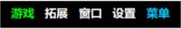
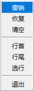
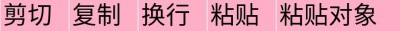
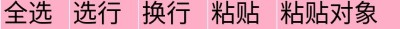
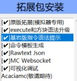
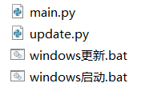

软件使用
本工具序需要与文件管理器、浏览器组合使用才可以完整体验所有功能。 如果您是安卓用户，请按照以下条目，安装对应的必要辅助软件。 安卓 13 及以上系统需额外安装 Shuziku。
本调试程序只涉及点击和输入文字操作。如果安卓用户执意多次执行返回操作， 将会直接关闭此调试程序。
界面管理栏
进入主界面，最下方的界面管理栏，可以在不同界面中分别切换，菜单按钮除外。 菜单按钮将唤起文字操作功能与退出按钮。


本地数据
本地文件存储
命令模拟器的世界储存和源代码位于同一目录位置。
Windows 的本地文件储存在用户自己选择的文件夹目录。
Android 的本地文件需要用户需要在 MT 管理器中，点击最上方路径栏，跳转至
/storage/emulated/0/Android/data/ru.iiec.pydroid3
如果是 Android 13 及以上系统则需要按照官方教程
授权 Shuziku 才能正常进入该目录。进入该目录，在此目录下有 files 文件夹，命令模拟器本地文件就储存于此。
用户可以在 MT 管理器中点击右上角菜单，对此目录设置首页或添加书签以方便下一次寻找该目录。
本地网站
命令模拟器在启动时会自动搭建一个本地服务器，这个服务器将服务于命令模拟器中的重要功能， 例如命令的语法错误反馈信息。并且你所阅读的帮助文档服务也由该本地服务器提供。
命令模拟器的本地服务器地址为：localhost:32323。
文字输入
文字输入和操作
命令模拟器使用 tkinter UI 库进行搭建，因此很多文字操作功能无法直接在安卓和 Windows 中同时进行兼容。
命令模拟器中的撤回和恢复操作需要界面操作栏中的菜单按钮进行撤回和恢复。
在安卓平台，命令模拟器中的输入框同样也不支持输入法中提供的全选、复制、剪切、粘贴功能， 需要依靠快捷操作菜单中的按钮进行支持。部分安卓用户由于输入法差距，换行也无法使用， 文本操作菜单中的按钮也支持换行。
文本操作菜单

如果用户在输入框中，在输入框中进行缓慢的拖动操作，即可选中输入框内的文字。 这时会显示文本操作菜单 1，如上图所示。点击对应菜单即可执行对应的操作。

如果用户在输入框中，对同一位置进行多次缓慢的点击，即可显示文本操作菜单 2，如上图所示。 点击对应菜单即可执行对应的操作。
这是界面切换栏中的菜单选项，适用于本程序所有的文本输入框。
在线服务
用户登录
命令模拟器的登录功能主要是为拓展包而服务。拓展包的下载需要在服务器中验证用户是否拥有拓展包， 如果用户想拥有拓展包，需要在命令模拟器官网中购入。 如果没有账号，也可以在官网进行注册。
拓展包

拓展包的平台都是第三方拓展包。第三方拓展包为命令模拟器附加的服务，使用第三方拓展包需要注册命令模拟器的账户， 并在官网选购拓展包，拓展包将会根据未来用户的反馈进行更新。第三方拓展包并不是只由命令模拟器作者进行开发， 未来可能有拓展包开发者对自己的拓展包进行定价，请各位用户尊重拓展包开发者的著作权。
第三方拓展包有启动和重启两个开启方式。如果点击启动，则将恢复用户上一次对该拓展包内容的修改， 如果点击重启，则销毁上一次的修改重新启动拓展包。
软件更新
命令模拟器在服务器查询到最新版本时会提醒用户是否需要更新。

安卓用户需要在 main.py 所在的目录，寻找 update.py 文件，
使用 Pydroid 3 打开文件后，运行文件即可更新。
Windows 用户在根目录需要寻找 Windows更新.bat 文件，双击运行后即可更新。
如果用户误删除了程序的重要文件，也可以通过更新来进行恢复。